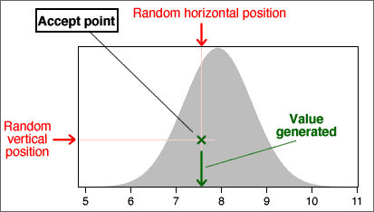

Generating a continuous numerical value
There are several algorithm that can efficiently generate random values from continuous distributions. For example, the Excel function "=NORMSINV(RAND())" generates a random value from a normal distribution with µ = 0 and σ = 1.
The following method is simple to explain but is not recommended for general use.
Consider the diagram below which encloses the distribution's probability density function with a rectangle.
A random position within the rectangle is generated with a random rectangular horizontal and vertical positions. If it lies within the density function, the x-coordinate is the generated value. Otherwise more positions within the rectangle are generated until a point is found within the density function.

